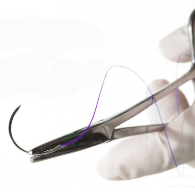

Surgical technique using electrical currents to cut or coagulate tissue.
Cells lining the interior surface of blood vessels and heart.
The outer layer of the heart’s serous pericardium.
Brand of surgical sutures known for quality and variety.
Machine that provides cardiac and respiratory support outside the body.
Major artery in the thigh supplying blood to the lower limbs.
Formation of fibrous tissue in response to injury or surgery.
Suture used to secure tissues or implants in place.
Suture made from a synthetic material known for its strength and biocompatibility.
Surgical procedure to replace a damaged heart valve with a prosthetic one.
The process of stopping bleeding during or after surgery.
Use of fluid to separate or dissect
tissues during surgery.
Thick, raised scar that forms due to excessive collagen production.
Suture placed within the corneal stroma, often for corneal surgery.
Surgical procedure to reshape or replace the cornea.
Device or material used to tie off blood vessels or ducts.
Clips used to occlude blood vessels or ducts.
Stapler that places a row of staples in a linear fashion.
Surgical removal of one or both breasts, usually to treat or prevent breast cancer.
Valve located between the left atrium and left ventricle of the heart.